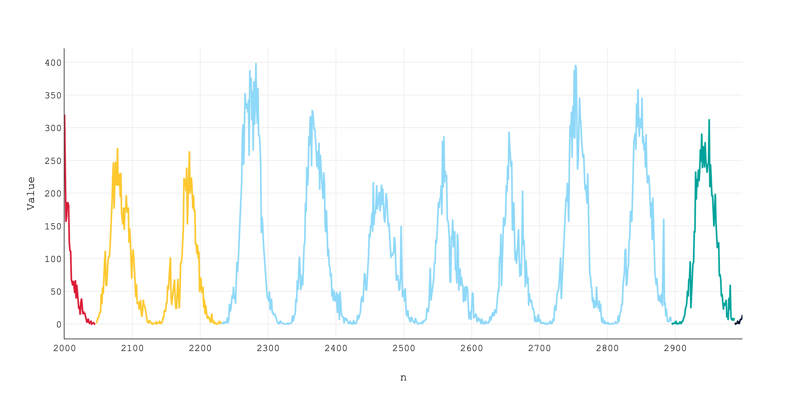

Nowcasting Urban Mobility
Carrow Morris-Wiltshire
Supervised by Stuart Barr, Phil James and Keith Hermiston


Scenario
Challenge
Cities are complex systems that need real-time monitoring for effective emergency response and resource management.
Data Sources
- Emergency calls (999)
- Mobile Data Terminals
- Traffic camera feeds
- Weather stations
- CCTV networks
- Satellite imagery
Real-time information enables reactive decision-making.
Proactive (predictive) decision-making requires reliable models that can differentiate between high and low quality data without human intervention.
Key Question
How can we make reliable decisions based on predictive modelling where the model has an "awareness" of data quality?
Investigation
Investigation
Model Performance

Model Performance
Interpretation
Interpretation
Interpretation
Interpretation
Interpretation
Looking Forward
Machine understanding of DQ is critical in enabling reliable prediction-based decision-making.
What the research suggests is that training on real-world data is currently not good enough.
Can we enhance training with data "virtual sensors" embedded in agent based models?
Implementing virtual sensors could serve two purposes:
Implementing virtual sensors could serve two purposes:
- Gaining a more accurate understanding of the systems dynamics can help to identify erroneous results.
Implementing virtual sensors could serve two purposes:
- Gaining a more accurate understanding of the systems dynamics can help to identify erroneous results.
- Allows real-world data to be fed into the model for more accurate real-time predictions.
Relevance to SAFEcommand
Relevance to SAFEcommand
When an incident occurs, responders don't just know the current situation - they can see how it's likely to unfold:
When an incident occurs, responders don't just know the current situation - they can see how it's likely to unfold:
Instead of discovering traffic bottlenecks en route, they know which routes will become congested in the next 15 minutes.
Instead of discovering traffic bottlenecks en route, they know which routes will become congested in the next 15 minutes.
Rather than reacting to crowd buildups, they can predict where people will congregate based on real-time movement patterns.
Rather than reacting to crowd buildups, they can predict where people will congregate based on real-time movement patterns.
Instead of responding to incidents one at a time, they can anticipate cascade effects across the city's systems.
Instead of responding to incidents one at a time, they can anticipate cascade effects across the city's systems.
Rather than making decisions based on static information, they have a dynamic view of how the situation will evolve.